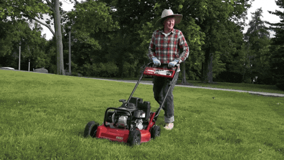

Garden maintenace
Garden maintenance involves the practices and techniques used to care for and enhance outdoor spaces, ensuring they remain healthy, aesthetically pleasing, and functional. A garden maintenance class provides essential skills for anyone interested in caring for gardens, whether for personal enjoyment or professional landscaping. Participants learn not only the practical aspects but also the environmental considerations that come with gardening.
Concepts covered in the garden maintenance class:

- Soil Health:
- Understanding soil types and structure
- Soil testing and amendments
- Composting techniques
- Plant Care:
- Identifying plant species and their needs
- Pruning and deadheading techniques
- Fertilization and pest management
- Watering Practices:
- Efficient irrigation systems (drip, sprinklers)
- Water conservation methods
- Understanding plant water needs
- Weed Control:
- Identifying common weeds
- Manual and chemical control methods
- Mulching techniques to suppress weeds
- Seasonal Tasks:
- Spring planting and fall clean up
- Preparing gardens for winter
- Seasonal pest and disease management
- Landscape Design Principles:
- Basic design concepts (color, texture, scale)
- Creating functional garden spaces
- Plant selection for different environments
- Garden Tools and Equipment:
- Overview of essential tools (pruners, shovels, hoes)
- Proper tool maintenance and safety
- Equipment for larger spaces (lawnmowers, tillers)
- Sustainability Practices:
- Organic gardening methods
- Attracting beneficial wildlife
- Sustainable landscaping techniques
Practical Experience:
- Hands-on activities like planting, pruning, and composting.
- Field trips to local gardens or nurseries.
- Developing a maintenance schedule for a garden.